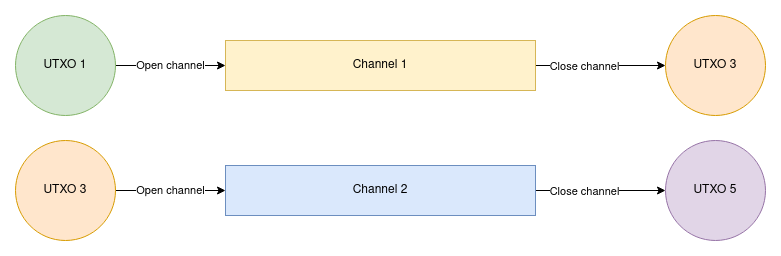

Future Evolutions

Future Evolutions
Gabriel Comte
What are they?
Questions about dual-funding?
Any ideas?
Current situation
Questions splicing?
Ever heard of it?


Draft: BIP 118
Previously SIGHASH_NO_INPUT
Requires a soft fork
... community is not in consensus about it
Questions about eltoo?
Who has heard about Lightning offers?
Questions about BOLT 12?
What could that be?

Questions about blinded paths?
Ever heard of PTLCs?
Questions about PTLCs?
¿Quién sabe?
Payment channels that can spawn other payment channels
Questions about channel factories?
¿Qué son?
Inofficial BOLT 13
All off-chain protocols assume the user remains online and synchronised with the network. To alleviate this assumption, customers can hire a third party watching service ...
Do you see any issues with that scheme?
... do you see any issues with that scheme?
Standard isn't perfectly followed
Standard is a bit outdated
Watchtowers exist
Degree of usage unknown
Questions about watchtowers?
Skipped in talk 'History of Paymnet Channels'